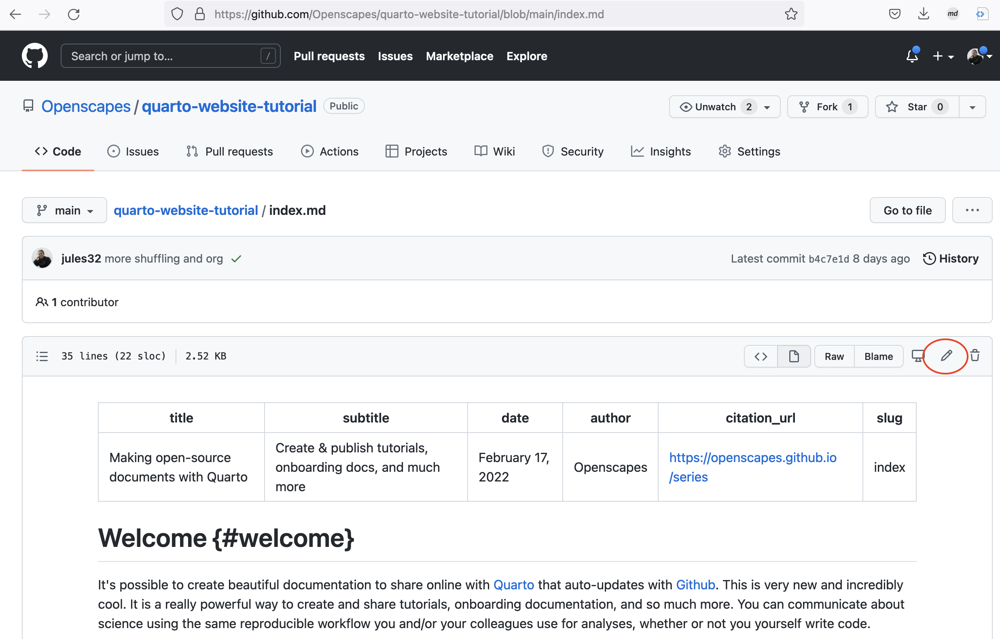
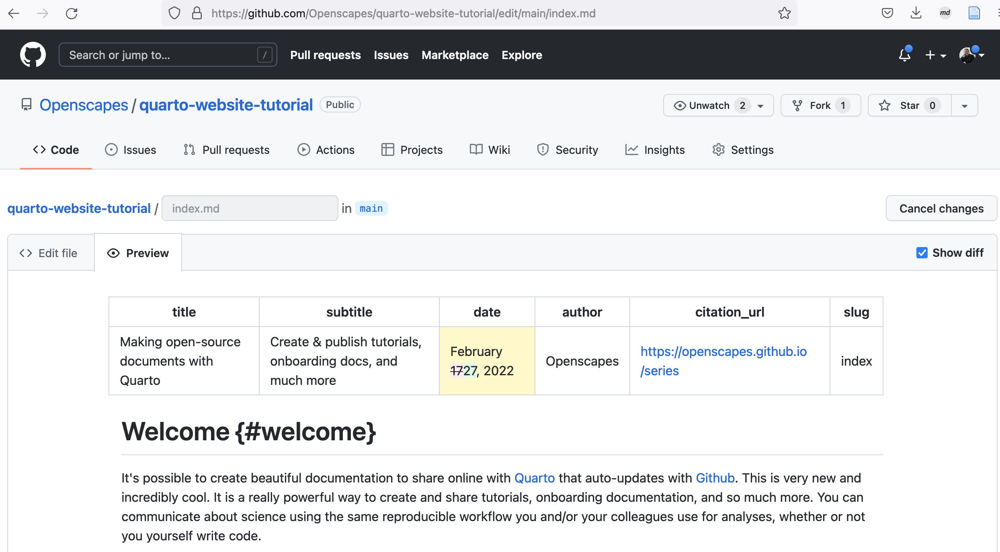
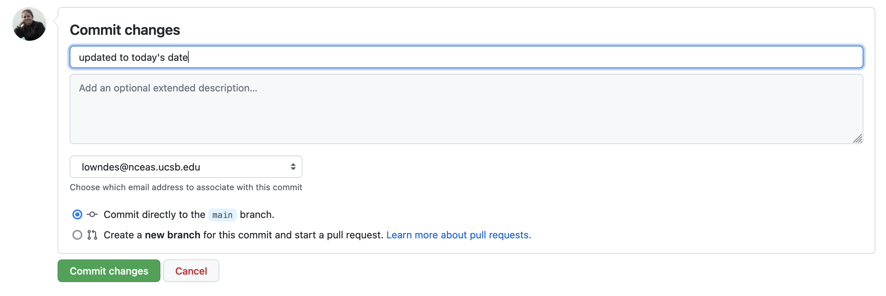

From the Browser
A workflow from the browser if good for getting started (since you do not need to install additional software) and for making small contributions, but is definitely limited. Once you feel comfortable here, you can move to a different setup.
Here’s an example of editing content on an existing page.
Edit content on an existing page
Let’s change the date on the home page of this website.
In your repository, navigate to index.md. Then, click the pencil icon in the top right to edit directly.

We are now in the “Edit file” tab of the editor, where we can make modifications. Let’s change the date to today’s date. Click the “Preview” tab to see your changes. You can even check the “Show diff” box on the right side to see the changes you’ve made.

While you’re here, see if there are additional changes to the text you’d like to make. Maybe changing the title or author at the top, or for the main text on the home page of the website.
Our index.md file is written in Markdown, which enables you to make simple text formatting. As you go back and forth from “Edit file” to “Preview”, notice the patterns of how the Markdown text looks when it is as source (“Edit file”) and when it is formatted (“Preview”). For example, in Markdown, you can make text as a header with # symbols, bold or italic with * symbols, and hyperlinks with [](). Notice that spacing is important: for example, there are carriage returns (when you hit the “return” key) before any bullet points. You can learn the short list of Markdown rules here: https://quarto.org/docs/authoring/markdown-basics.
Commit and publish
Commit your changes by scrolling to the bottom of the page and writing a commit message - a note to yourself and others about what changes you made. Write your commit message and then click the green “Commit changes” button.

Now, click back to the main page of your GitHub repository. You should see the orange dot confirming your website is published. You’ll have to wait for the GitHub Action to tell quarto to build your site for you to see the update, but it will be there!
Limitations
While awesome that we can edit using GitHub directly from the browser, there are obvious limitations. One is that to see your edits show up in your book, you have to publish using the GitHub Action. This is slow. Another limitation is that we can only work on one file at a time and commit them each separately, which also is slow. Using additional software can make things much better, as we explore in subsequent chapters.